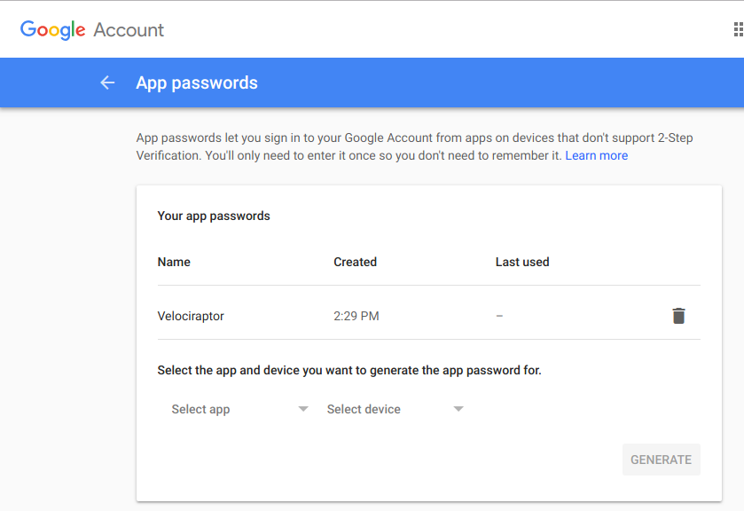

Server side VQL queries and Escalation Events
Previously we have seen how Velociraptor collects information from end points using Velociraptor artifacts. These artifacts encapsulate user created queries using the Velociraptor Query Language (VQL). The power of VQL is that it provides for a very flexible way of specifying exactly what should be collected from the client and how - without needing to modify client code or deploy new clients!
This is not the whole story though! It is also possible to run VQL queries on the server side! Similarly server side Velociraptor artifacts can be used to customize the operation of the server - without modifying any code or redeploying the server components.
Server Side VQL Queries.
By now you are probably familiar with Velociraptor and VQL. We have seen that it is possible to run a VQL query interactively from the commandline. For example to find all processes matching the ‘gimp’:
$ velociraptor query \
"SELECT Pid, Exe, Cmdline FROM pslist() WHERE Exe =~ 'gimp'"
[
{
"Cmdline": "gimp-2.10",
"Exe": "/usr/bin/gimp-2.10",
"Pid": 13207
}
]
We have used this feature previously in order to perfect and test our queries by interactively building the query as we go along.
However it is also possible to run queries on the server itself in order to collect information about the server. There is nothing special about this as such - it is simply that some VQL plugins are able to operate on the server’s internal data store and therefore provide a way to interact with the server via VQL queries.
Note
Other endpoint monitoring tools export a rich API and even an API client library to enable users to customize and control their installation. For example, GRR expects users write python scripts using the GRR client API library.
Velociraptor’s approach is different - the functionality typically available via APIs is made available to VQL queries via VQL plugins (e.g. client information, flow information and results collected). In this way the VQL itself forms an API with which one controls the server and deployment. There is no need to write any code - simply use existing VQL plugins in any combination that makes sense to create new functionality - then encapsulates these queries inside Velociraptor artifacts for reuse and sharing.
For example, to see all the clients and their hostnames:
$ velociraptor query \
"SELECT os_info.fqdn as Hostname, client_id from clients()" --format text
+-----------------+--------------------+
| Hostname | client_id |
+-----------------+--------------------+
| mic-Inspiron | C.772d16449719317f |
| TestComputer | C.11a3013cca8f826e |
| trek | C.952156a4b022ddee |
| DESKTOP-IOME2K5 | C.c916a7e445eb0868 |
+-----------------+--------------------+
SELECT os_info.fqdn AS Hostname,
client_id FROM clients()
To inspect what flows were run on a client:
$ velociraptor query \
"SELECT runner_args.creator, runner_args.flow_name, \
runner_args.start_time FROM \
flows(client_id='C.772d16449719317f')"
[
{
"runner_args.creator": "",
"runner_args.flow_name": "MonitoringFlow",
"runner_args.start_time": 1544338661236625
},
{
"runner_args.creator": "mic",
"runner_args.flow_name": "VFSDownloadFile",
"runner_args.start_time": 1544087705756469
},
...
Client Event Monitoring
We have also previously seen that Velociraptor can collect event streams from clients. For example, the client’s process execution logs can be streamed to the server. Clients can also receive event queries which forward selected events from the windows event logs.
When we covered those features in earlier blog posts, we stressed that the Velociraptor server does not actually do anything with the client events, other than save them to a file. The server just writes the client’s events in simple Comma Separated files (CSV files) on the server.
We mentioned that it is possible to import this file into another tool (e.g. a spreadsheet or database) for post-processing. An alternative is to perform post-processing with Velociraptor itself using server side VQL queries.
For example, we can filter a client’s process execution log using a VQL query:
$ velociraptor query "SELECT * from monitoring(
client_id='C.87b19dba006fcddb',
artifact='Windows.Events.ProcessCreation')
WHERE Name =~ '(?i)psexesvc' "
[
{
"CommandLine": "\"C:\\\\Windows\\\\PSEXESVC.exe\"",
"Name": "\"PSEXESVC.exe\"",
"PID": "452",
"PPID": "512",
"Timestamp": "\"2018-12-09T23:30:42-08:00\"",
"artifact": "Windows.Events.ProcessCreation",
"client_id": "C.87b19dba006fcddb"
}
]
The above query finds running instances of psexec’s service component - a popular method of lateral movement and privilege escalation.
This query uses the monitoring() VQL plugin which opens each of the CSV event monitoring logs for the specified artifact on the server, decodes the CSV file and emits all the rows within it into the VQL Query. The rows are then filtered by applying the regular expression to the name.
Server side event queries
VQL queries do not have to terminate at all. Some VQL plugins can run indefinitely, emitting rows at random times - usually in response to some events. These are called Event Queries since they never terminate. We saw this property when monitoring the client - the above Windows.Events.ProcessCreation artifact uses an event query which emits a single row for each process execution on the end point.
However, we can also have Event Queries on the server. When used in this way the query triggers in response to data collected by the server of various clients.
For example, consider the above query to detect instances of psexec executions. While we can detect this by filtering existing monitoring event logs, it would be nice to be able to respond to such an event dynamically.
One way is to repeatedly run the same query (say every minute) and look for newly reported instances of psexec executions. But this approach is not terribly efficient. A better approach is to install a watcher on the monitoring event log:
$ velociraptor query "SELECT * from watch_monitoring(
client_id='C.87b19dba006fcddb',
artifact='Windows.Events.ProcessCreation') where Name =~ '(?i)psexesvc' "
[
{
"CommandLine": "\"C:\\\\Windows\\\\PSEXESVC.exe\"",
"Name": "\"PSEXESVC.exe\"",
"PID": "4592",
"PPID": "512",
"Timestamp": "\"2018-12-10T01:18:06-08:00\"",
"artifact": "Windows.Events.ProcessCreation",
"client_id": "C.87b19dba006fcddb"
}
]
The watcher efficiently follows the monitoring CSV file to detect new events. These events are then emitted into the VQL query and subsequently filtered. When the query processes all rows in the file, the plugin just sleeps and waits for the file to grow again. The watch_monitoring() plugin essentially tails the CSV file as it is being written. Note that due to the fact that log files are never truncated and always grow, and that CSV file format is a simple, one row per line format it is possible to both read and write to the same file without locking. This makes following a growing log file extremely efficient and safe - even from another process.
Responding to server side events
The previous query will return a row when psexec is run on the client. This is a very suspicious event in our environment and we would like to escalate this by sending us an email.
We can modify the above query to send an email for each event:
SELECT * FROM foreach(
row={
SELECT * from watch_monitoring(
client_id='C.87b19dba006fcddb',
artifact='Windows.Events.ProcessCreation')
WHERE Name =~ '(?i)psexesvc'
},
query={
SELECT * FROM mail(
to='admin@example.com',
subject='PsExec launched on host',
period=60,
body=format(format='PsExec execution detected at %v: %v',
args=[Timestamp, Commandline])
)
})
The query sends an email from each event emitted. The message body is formatted using the format() VQL function and this includes important information from the generated event. Note that the mail() plugin restricts the frequency of mails to prevent triggering the mail server’s spam filters. So if two psexec executions occur within 60 seconds we will only get one email.
In order for Velociraptor to be able to send mail you must configure SMTP parameters in the server’s configuration file. The following example uses gmail to send mails (other mail providers will have similar authentication requirements).
Mail:
server: "smtp.gmail.com"
auth_username: someuser@gmail.com
auth_password: zldifhjsdflkjfsdlie
The password in the configuration is an application specific password obtained from https://security.google.com/settings/security/apppasswords
Tying it all together: Server Side Event Artifacts
As always we really want to encapsulate VQL queries in artifact definitions. This way we can design specific alerts, document them and invoke them by name. Let us encapsulate the above queries in a new artifact:
name: Server.Alerts.PsExec
description: |
Send an email if execution of the psexec service was detected on any client.
Note this requires that the Windows.Event.ProcessCreation
monitoring artifact be collected.
parameters:
- name: EmailAddress
default: admin@example.com
- name: MessageTemplate
default: |
PsExec execution detected at %v: %v for client %v
sources:
- queries:
- |
SELECT * FROM foreach(
row={
SELECT * from watch_monitoring(
artifact='Windows.Events.ProcessCreation')
WHERE Name =~ '(?i)psexesvc'
},
query={
SELECT * FROM mail(
to=EmailAddress,
subject='PsExec launched on host',
period=60,
body=format(
format=MessageTemplate,
args=[Timestamp, CommandLine, ClientId])
)
})
We create a new directory called my_artifact_directory and store that file inside as psexesvc.yaml. Now, on the server we invoke the artifact collector and instruct it to also add our private artifacts:
$ velociraptor --definitions my_artifact_directory/ \
--config ~/server.config.yaml \
--format json \
artifacts collect Server.Alerts.PsExec
INFO:2018/12/10 21:36:27 Loaded 40 built in artifacts
INFO:2018/12/10 21:36:27 Loading artifacts my_artifact_directory/
[][
{
"To": [
"admin@example.com"
],
"CC": null,
"Subject": "PsExec launched on host",
"Body": "PsExec execution detected at \"2018-12-10T03:36:49-08:00\": \"C:\\\\Windows\\\\PSEXESVC.exe\"",
"Period": 60
}
]
Conclusions
This blog post demonstrates how VQL can be used on the server to create a full featured incident response framework. Velociraptor does not dictate a particular workflow, since all its actions are governed by VQL queries and artifacts. Using the same basic building blocks, users can fashion their own highly customized incident response workflow. Here is a brainstorm of possible actions:
- An artifact can be written to automatically collect a memory capture if a certain event is detected.
- Using the http_client() VQL plugin, when certain events are detected on the server open a ticket automatically (using a SOAP or JSON API).
- If a particular event is detected, immediately shut the machine down or quarantine it (by running shell commands on the compromised host).
The possibilities are truly endless. Comment below if you have more interesting ideas and do not hesitate to contribute artifact definitions to address your real world use cases.